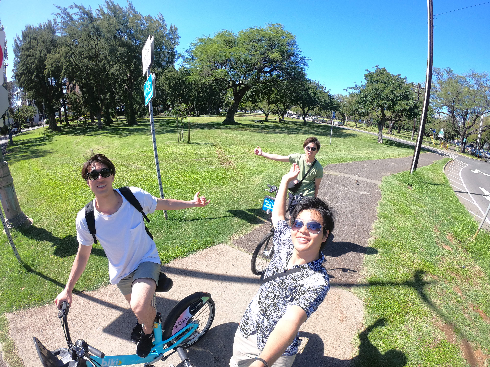

・２０１５年３月入学→２０１６年８月 １か月乗船実習(夏休みの無い8月） →２０１９年３月卒業→航空大学校合格
選んだ研究室の教授は鬱病。院生にならないという夢を達成
梅雨の時期の日本が嫌いで セブ島 へ。（２０１９年６月） しかし一か月に留学を終えても日本はまだ梅雨入りしていなかった。そのためもう一度セブ島へ行くことを決意。留学中の友人にドッキリを仕掛ける。ただ旅行じゃつまらないのでダイビングのライセンスを取得。
楽しい学校です楽しい学校です楽しい学校です楽しい学校です楽しい学校です楽しい学校です楽しい学校です楽しい学校です楽しい学校です